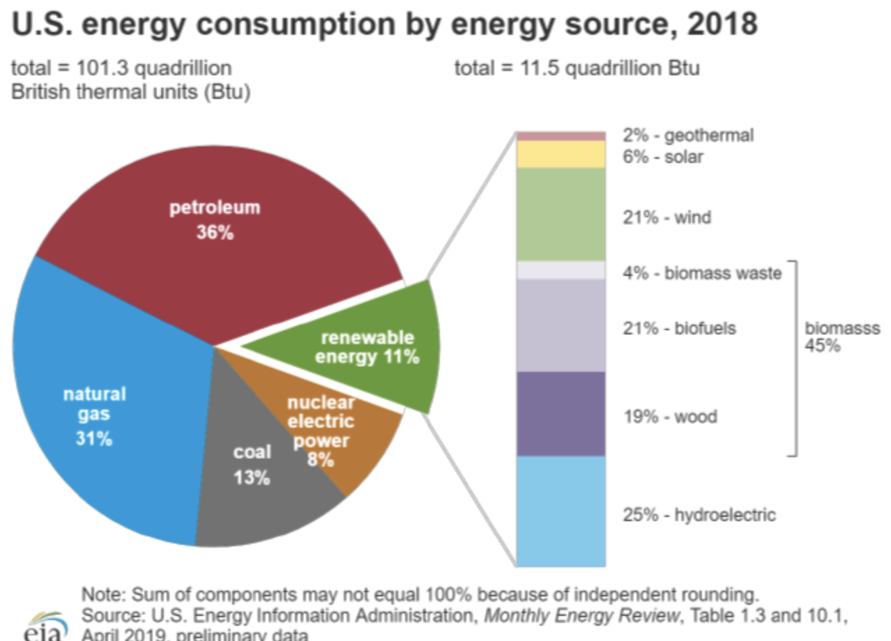

-
What is Climate Change?
Climate change is a process in which the earth's climate changes over time. It is a relative natural process which earth has experienced over many years. The problem we face today is the rapid increase in climate change from our consumption of fossil fuels. Most of these problems have been a result of the industrial revolution and change in our energy consumption. By releasing so many greenhouse gasses in such a short amount of time there is much evidence to suggest that this has contributed to an increase of global temperature. The effects of this can be seen with receding glaciers, rising sea levels, ocean acidity, dangerous air pollution, and loss of many different kinds of animals.
The future remains bleak as the whole world continues to struggle for solutions to our many problems. Today's world and infrastructure depend on these fossil fuels, from boats to trains to cars that we use each day. To suddenly change fuels would require new infrastructure, new laws, new regulations, new vehicles, and new ways to live our lives. These changes would also come with a new price tag. Many governments and organizations are already doing their best to improve current practices such as becoming carbon neutral, removing pollutants and running on renewable resources. Governments and organizations lack the funding and the support along with the slow legislation process to keep pace with the damage being done. When all of this it taken into account experts estimate little to no time is left to fix the the damage we've done.
A way to help and better inform others about the situation, is to show them advantages of renewables resources. Renewable resources can provide clean and efficient energy, with no dangerous byproducts, have no need for expensive fuel, and are sustainable. -
Other reasources

Energy Calculators
-
Calculating Hydropower
For example hydropower is the simple use of using potential enegy of water as it runs a downward course due to gravity. By using this potential energy and turning it into electricty the need for costly development and transportation of fuel is cut, along with any dangerous byproducts. To calculate the energy output generated by water falling, it would be the acceleration of gravity multiplied by the mass of the water and the height.
-
Claculating Wind Energy
Wind in many ways can be more advantagous than water or solar. Wind blows all day, rain or sunny, night and day and through any season. Wind is a direct result of solar energy, as the sun heats up different parts of the earth the difference in temperature creates air currents. Each unit of air mass has kenitic energy proportional to the square of its velocity and the amount of air mas moving past a given point per unit time is proportional to the wind velocity. For average conditions Power/ mass ^2 = 6.1x10^-4v^3
-
Calculating Solar Energy
Earth's main energy source is the sun, many things that operate on this planet occur beacuse of solar energy. Not all solar energy reaches the earth, only about 47% reaches the ground. The solar constant, 2calories/minutes x centimeters^2 when accounting for average light and lattitute comes out to 1/2cal/min*cen^2. When converting this to watts, this leaves us with 164W per meter squared in a 24 hour day. Solar energy varies from time and place, with places near the equator reciving more direct sunlight. There are also 3 different ways to collect sunlight such as, a flat plate collector, a photovoltaic cell, and a solar power tower.
-
Calculating Geothermal Energy
The earth slowly releases heat from the core to the surface, a total of 32x10^12W. However the average is less than that at about 1/16W per square meter. Heat from the earth is a result of redioactive decay and gravitational compression. There are also many types of geothermal resources such hot water, steam, hot rocks, magma, and geopressure. The most desirable is steam.
- 
-
Energy Consuption
The United States consumption of energy is huge. About 3.9 x 10^12 kilowatt hours a year. The solar energy that covers the United States is many more times that. If we could capture .16% of that energy we could cover our energy needs. While we are slowly changing our energy consuption, only about 10% is coming from renewable resources. Some of the problems we come across when using renewables is their availabilty. They aren't always dependable, such as for example, solar panels at night or wind mills on a not so windy day. Even geothermal energy production is not very dependable as the resource takes a very long time to replenish. These factors make fossil fuels important as they can easily be transported and stored and used when needed. The problem with even this is the availabilty. Estimates show that the current rate fossil fuels are limited to a few decades. Depending on them could cause disaster when it comes to a sudden stop. Another major problem with fossil fuels is the horrible efficiency they have. Fossil fuels require a heat engine, and are very inefficient with most running at 30%. To put it into perspective, things like solar panels run at 18% but without any harmful waste heat and dangerous gasses. Dams on the other side can run at 90%. Coal power plants also require a massive heat sink to transfer waste heat. This usually requires plants to be built near water and use water to release heat. Energy consuption with renewable resources can not only improve our enviernment but can also reduce wasted enregy.